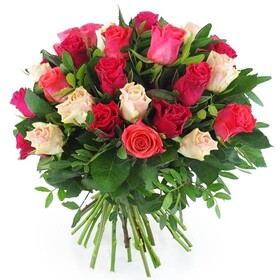
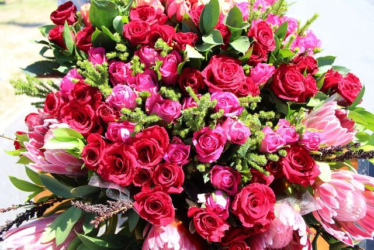
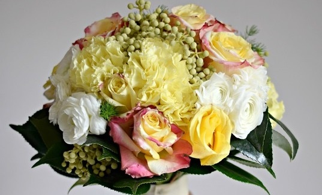
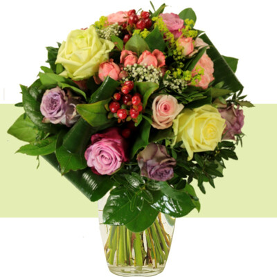
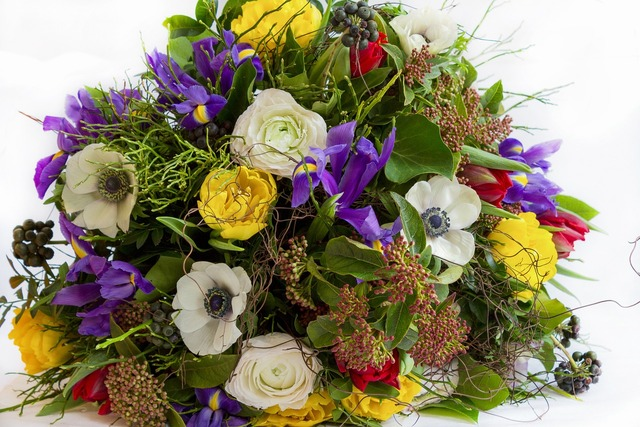
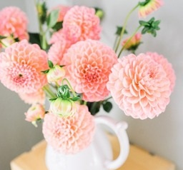

<!DOCTYPE html>
<html lang="fr"> </html> 
    <head>
        <meta charset="utf-8">
        <link href="index2.css" rel="stylesheet">
        <title>Index</title>
        <link rel="stylesheet" href="index2.css">
        <link rel="preconnect" href="https://fonts.googleapis.com">
        <link rel="preconnect" href="https://fonts.gstatic.com" crossorigin>
        <link href="https://fonts.googleapis.com/css2?family=Dancing+Script:wght@400..700&display=swap" rel="stylesheet">
      </head>
    <body>
        <section>
            <header>
                <h1>
                    <ul>
                        <li>Home</li>
                        <a href="entreprise.html"><li>Entreprise</li></a>
                        <a href="realisations.html"><li>Réalisations</li></a>  
                        <a href="contact.html"><li>Contact</li></a>                      
                        <!-- Partie relative au bandeau gris supérieur -->
                    </ul>
                    <form> 
                        <input type="text" name="text" class="search" >
                        <input type="submit" name="submit" class="submit" value="Search"><!-- Barre de recherche -->
                    </form>  
                </h1> 
            </header>
        </section>
        <main>
            <section>
                <h1 class="société"></h1>
                <!-- Nom de l'entreprise -->
                <h2 class="devise">Chez BloomPetals, nous croyons que chaque célébration mérite d'être parée de la beauté
                naturelle des fleurs. Nous sommes une entreprise passionnée et créative spécialisée dans
                la confection de magnifiques bouquets floraux pour embellir vos événements spéciaux. Que
                ce soit un mariage, un anniversaire, une réception ou toute autre occasion festive, nos
                artisans floraux talentueux travaillent avec dévouement pour créer des arrangements
                uniques et époustouflants qui émerveilleront vos invités. </h2>
                <!-- Sa devise -->
            </section> 
                <section class="bouquets">
                    
                    
                    
                    
                    
                    <!-- 1ère ligne de bouquets -->
                </section>
                    <section class="nosengagements"><span>
                        <p><link href="https://emoji-css.afeld.me/emoji.css" rel="stylesheet">
                        <i class="em em-white_check_mark" aria-role="presentation" aria-label="WHITE HEAVY CHECK MARK"></i>
                        <i class="services">Service 1</i> <br> Création de bouquets personnalisés : BloomPetals offre un service de création de
                            bouquets floraux entièrement personnalisés pour toutes les occasions. Que ce soit pour un
                            mariage élégant, un anniversaire chaleureux ou un événement d'entreprise sophistiqué,
                            notre équipe d'artisans floraux talentueux travaille en étroite collaboration avec les clients.
                            pour concevoir des arrangements sur mesure, adaptés à leurs goûts et à l'ambiance de
                            l'événement.</p>

                        <p><link href="https://emoji-css.afeld.me/emoji.css" rel="stylesheet">
                        <i class="em em-white_check_mark" aria-role="presentation" aria-label="WHITE HEAVY CHECK MARK"></i>
                        <i class="services">Service 2</i> <br> Décoration Florale d'Événements : Notre équipe de professionnels se spécialise dans
                            la décoration florale d'événements. Nous transformons les lieux de fêtes en espaces
                            enchanteurs en utilisant des fleurs fraîches et luxuriantes. Des centres de table élégants aux
                            arches florales majestueuses, nous concevons des décors floraux qui éblouissent et
                            captivent les invités. Notre service comprend également la livraison, l'installation et la
                            décoration sur place pour garantir une expérience sans stress pour nos clients.</p>

                        <p><link href="https://emoji-css.afeld.me/emoji.css" rel="stylesheet">
                        <i class="em em-white_check_mark" aria-role="presentation" aria-label="WHITE HEAVY CHECK MARK"></i>
                        <i class="services">Service 3</i> <br> Ateliers de Composition Florale : En plus de nos services de décoration et de création
                            de bouquets, BloomPetals propose des ateliers de composition florale interactifs. Ces
                            ateliers sont parfaits pour les amateurs de fleurs et les passionnés de design floral. Nos
                            experts partagent leurs connaissances et leurs compétences, guidant les participants dans
                            la création de leurs propres arrangements floraux. C'est une expérience enrichissante et
                            ludique, idéale pour les événements d'entreprise, les enterrements de vie de jeune fille ou
                            les fêtes privées. Les participants repartent avec leurs créations florales uniques et des
                            souvenirs mémorables de l'atelier.</p></span>   
                            <!-- Prestation proposées -->
                    </section>
                        <section class="bouquets2">
                        
                        
                        
                        
                        
                        <!-- 2nde ligne de bouquets -->    
                        </section>
        </main>
      </body>